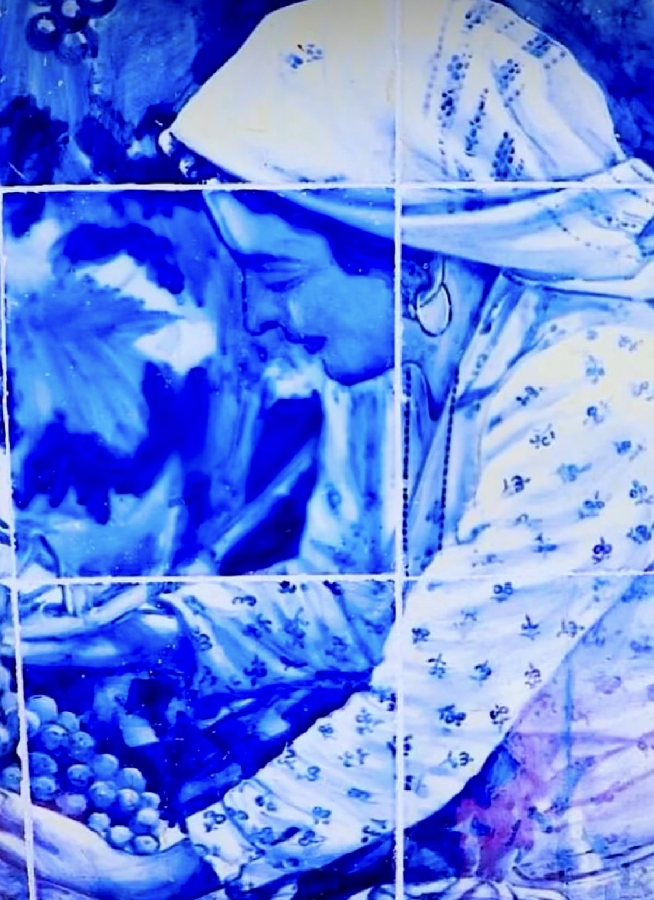
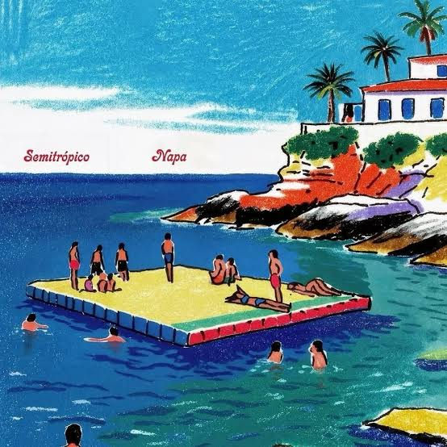
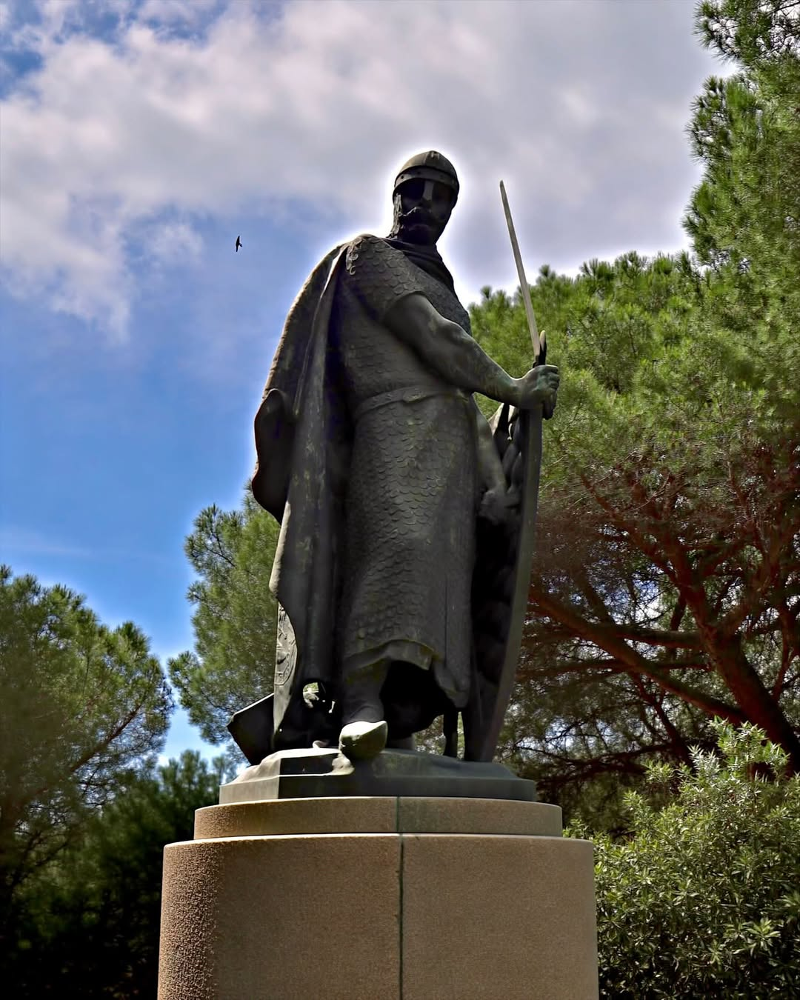
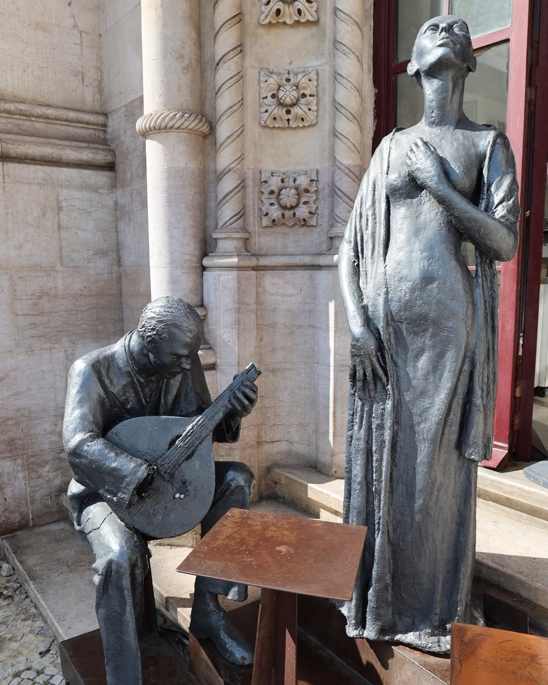
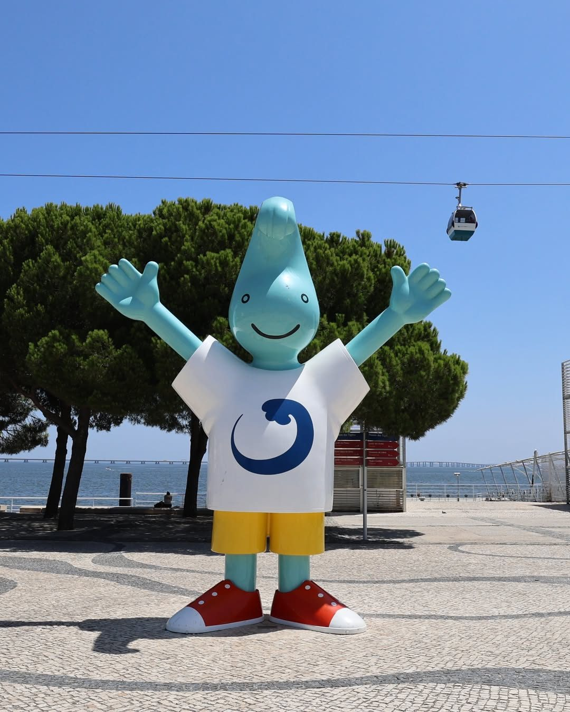
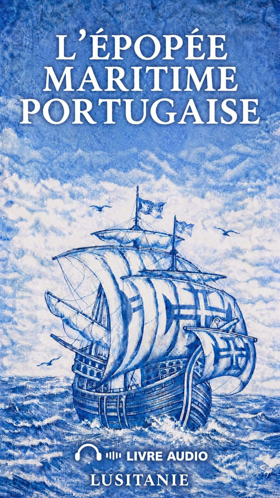

Le Portugal dans la Grande Guerre : les oubliés de la Lys
55 000 soldats portugais en Flandre, la bataille de la Lys et le soldat Milhais.
Derniers articles

Les azulejos du Portugal : histoire et lieux où les admirer
Au Portugal, on les voit partout : sur les façades, dans les églises, les palais, les gares et jusque dans le métro. Derrière ces carreaux de faïence se cachent plus de cinq siècles d'histoire.

« A Flor do Recomeço » : Salvador Sobral chante onze inédits de compositeurs brésiliens
Pour la première fois, Salvador Sobral n'interprète que des chansons de compositeurs brésiliens, toutes inédites et écrites pour lui.

NAPA en concert à La Maroquinerie le 11 novembre pour leur nouvel album « Semitrópico »
Après le succès mondial de « Deslocado », le groupe madérien NAPA sort son troisième album, « Semitrópico », et passe par Paris lors de sa tournée européenne.

Agustina Bessa-Luís (1922-2019), romancière de « La Sibylle » et figure majeure des lettres portugaises
Née le 15 octobre 1922 à Vila Meã, près d'Amarante, Agustina Bessa-Luís est l'une des grandes romancières portugaises du XXe siècle. En près de soixante-dix ans d'écriture, elle a laissé plus de cinquante ouvrages.

António Soares dos Reis, le sculpteur de « L'Exilé »
Né le 14 octobre 1847 à Vila Nova de Gaia, António Soares dos Reis est considéré comme le grand rénovateur de la sculpture portugaise du XIXe siècle. Une œuvre, surtout, a fixé son nom…

Calçada portuguesa : au Portugal, l’art se trouve aussi sous nos pieds
À Lisbonne, il suffit parfois de baisser les yeux pour découvrir une œuvre d’art.

L'art manuélin
L'expression « style manuélin » ne date pas du règne qui lui a donné son nom.

Le cloître des Jerónimos, chef-d'œuvre du style manuélin à Lisbonne
À Belém, le monastère des Hiéronymites cache derrière sa longue façade blanche l'un des espaces les plus achevés de l'architecture portugaise : un cloître à deux niveaux où la pierre raconte les…

Accents du Portugal : du Minho aux Açores, ce qui distingue les parlers régionaux
Le Portugal est petit par sa superficie, mais sa langue ne sonne pas de la même façon à Viana do Castelo et à Faro, à Lisbonne et à Ponta Delgada.
Toutes nos lectures
L'émigration portugaise vers la France racontée par les enfants

Le Museu Nacional de Arte Antiga de Lisbonne rouvre le 21 novembre

« Santo António, o Casamenteiro de Lisboa » : Rita Blanco et Joaquim Monchique dans la nouvelle comédie de Ruben Alves

Portugais et lusodescendants dans la fiction française : du regard extérieur au récit de l'intérieur

5 octobre 1910 : la proclamation de la République portugaise

Le traité de Zamora, 5 octobre 1143
Batalha : les Chapelles inachevées enfin restaurées
Gonçalves, João, Magalhães : les noms portugais écorchés en France

Le fado, l'âme d'un peuple

Le MAAT a 10 ans
Un morceau de France au cœur de Lisbonne

Gil, la mascotte de l'Expo 98, veille toujours sur le Parque das Nações

Nanbanjin : Cyril Pedrosa et Taiyō Matsumoto racontent la rencontre du Portugal et du Japon
La cartographie des Portugais de France
Mort de Jorge Palma, chanteur et auteur-compositeur, à 76 ans
Little Portugal, USA : l'Ironbound de Newark

L’épopée maritime portugaise
Le pont du 25 avril fête ses 60 ans
L'immigration portugaise en France

Le tombeau de Fernando Pessoa au Mosteiro dos Jerónimos
Luís Represas, la voix des Trovante, s'est éteint à 69 ans
Fado Português : le poème de José Régio chanté par Amália Rodrigues

Boca do Inferno — la bouche de tous les mystères

Saudade du futur

Dom Duarte — le roi philosophe et les prémisses de la saudade

La Tour de Belém — le joyau retrouvé

Un pays de poètes

Mon pays, c'est la saudade

Lisbonne, je t'ai tant aimée

Quinta da Regaleira — le labyrinthe des symboles

Sintra — l'Eden glorieux

Aquí — le Portugal à Cannes

Camões — une vie de roman, une épopée immortelle

Lisbonne sous les jacarandas en fleur

Deux jours à Lisbonne

Le don d'ubiquité

Mémoire d'exils — ce qui reste quand on part

Les mystères du fado

Fernando Pessoa — l'homme aux mille visages

O Emigrante — l'hymne d'une génération